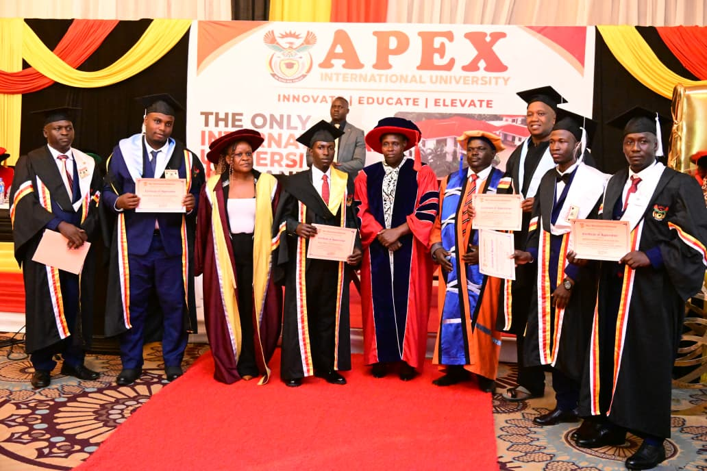

Curriculum Vitae
Personal Information
Name: Moses Ogwang
Location: Kampala, Uganda
Email:mosesogwang80@gmail.com
GitHub: github.com/mosesogwang80-collab
Education
| Year |
Institution |
Qualification |
| 2026 |
Apex International University |
Diploma in Information Technology (Distinction) |
| 2010–2011 |
Soroti Senior Secondary School |
Uganda Advanced Certificate of Education (UACE) |
| 2006–2009 |
Serere Secondary School |
Uganda Certificate of Education (UCE) |

Attachment: Ministry of Foreign Affairs (Current)
ICT Specialist & Institutional Support.
- Supporting ICT integration and digital solutions within Foreign Affairs.
- Contributing to national ICT development and institutional collaboration.
Skills
- System Administration & Server Deployment
- Web Application Development (PHP, HTML, CSS, MySQL, Python)
- Computer Networks & Data Communication (Packet Tracer, TCP/UDP testing)
- Workflow Adaptability across PC and Mobile Platforms
- Methodical Troubleshooting & Risk-Aware Technical Support
Projects
- Waste Management Reporting App: Designed for community reporting and accountability.
- Online Patient Management System: Developed for Iran–Uganda Hospital Naguru.
- Custom Web Applications: Hosted and deployed for institutional and community use.
Achievements
- Certificate of Appreciation: Best in course, Apex International University.
- Recognized for adaptability and innovation in ICT support within law enforcement.
Career Goal
To secure an ICT position within the Ministry of ICT & National Guidance, contributing to scalable digital solutions for national development.
© 2026 Moses Ogwang | CV page